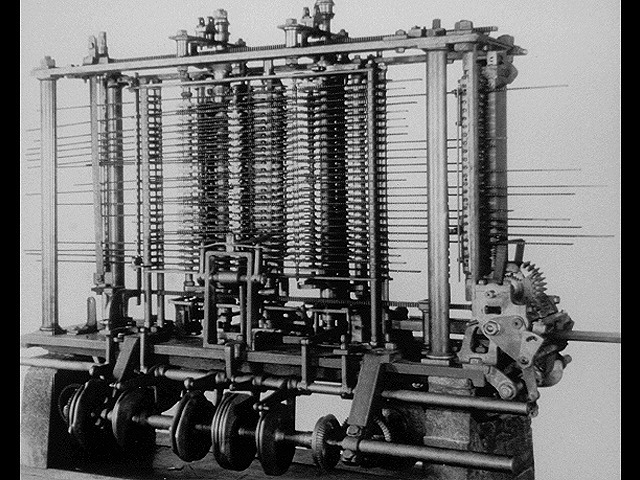
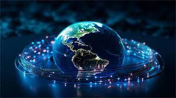

O Início da Computação
As Primeiras Máquinas
No século XIX, Charles Babbage idealizou a Máquina Analítica , o primeiro conceito de computador mecânico da história. Ela foi projetada para realizar cálculos automáticos e possuía elementos que lembram os computadores modernos, como memória e processador.
Embora nunca tenha sido construída devido às especificações tecnológicas da época, a Máquina Analítica é considerada um marco na história da computação e o ponto de partida para o desenvolvimento dos computadores atuais.

A Revolução dos Computadores
De Tubos a Transistores
Nos anos 1940, os primeiros computadores eletrônicos foram construídos utilizando tubos descartáveis, que eram grandes e pouco eficientes
Com a introdução dos transistores, a tecnologia passou por uma revolução, tornando os computadores mais compactos, rápidos e econômicos, impulsionando o avanço

A Era da Internet
A Conexão Global
A internet, criada nos anos 1960 e amplamente difundida nos anos 1990, mudou completamente o mundo ao conectar pessoas e informações em escala global.
Essa transformação impactou a comunicação, a inovação e diversos aspectos da vida moderna. Com o avanço contínuo da ciência da computação, novas tecnologias continuam expandindo.
